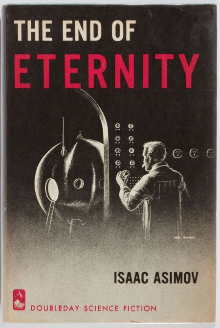

The End of Eternity (1955)
Synopsis
One of Isaac Asimov's SF masterpieces, this stand-alone novel is a monument of the flowering of SF in the 20th century. It is widely regarded as Asimov's single best SF novel and one every SF fan should read. Andrew Harlan is an Eternal, a member of the elite of the future. One of the few who live in Eternity, a location outside of place and time, Harlan's job is to create carefully controlled and enacted Reality Changes. These Changes are small, exactingly calculated shifts in the course of history made for the benefit of humankind. Though each Change has been made for the greater good, there are always costs. During one of his assignments, Harlan meets and falls in love with Noÿs Lambent, a woman who lives in real time and space. Then Harlan learns that Noÿs will cease to exist after the next change, and risks everything to sneak her into Eternity. Unfortunately, they are caught. Harlan's punishment? His next assignment: kill the woman he loves before the paradox they have created results in the destruction of Eternity.
Download PDF- 1 - Technician
- 2 - Observer
- 3 - Cub
- 4 - Computer
- 5 - Timer
- 6 - Life-Plotter
- 7 - Prelude to Crime
- 8 - Crime
- 9 - Interlude
- 10 - Trapped
- 11 - Full Circle
- 12 - The Beginning of Eternity
- 13 - Beyond the Downwhen Terminus
- 14 - The Earlier Crime
- 15 - Search through the Primitive
- 16 - The Hidden Centuries
- 17 - The Closing Circle
- 18 - The Beginning of Infinity